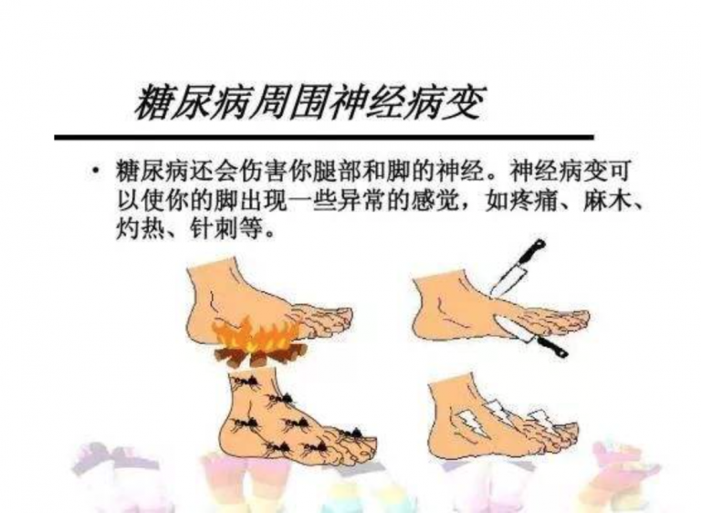
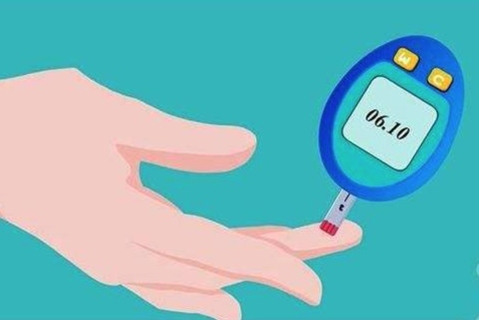
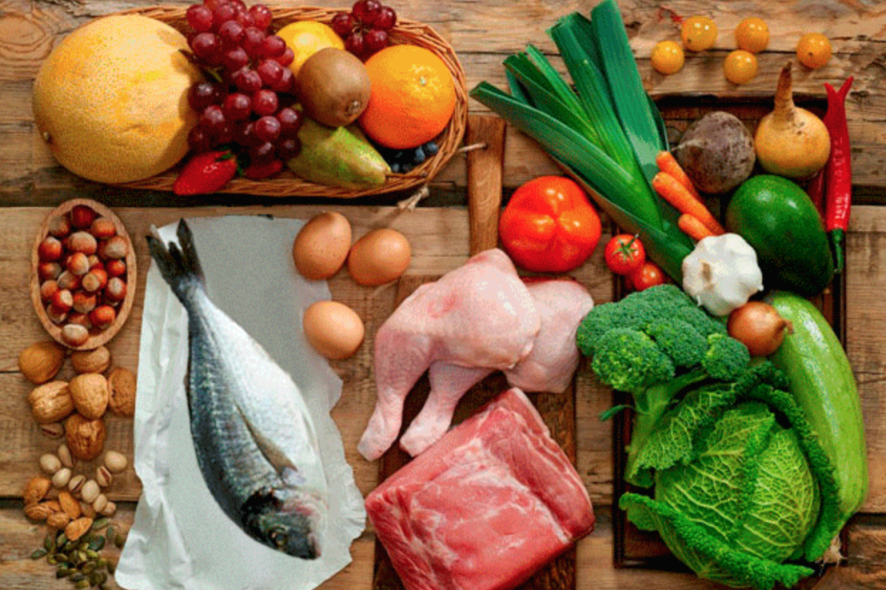
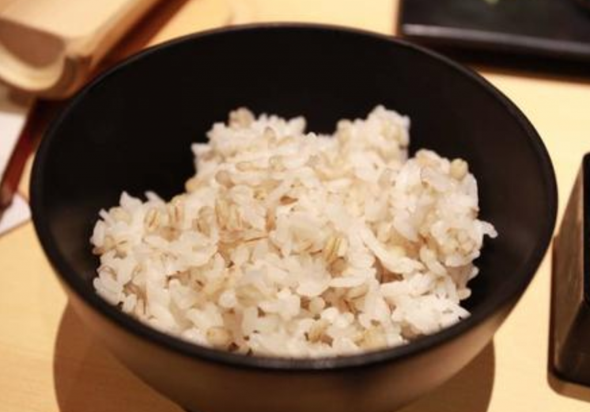
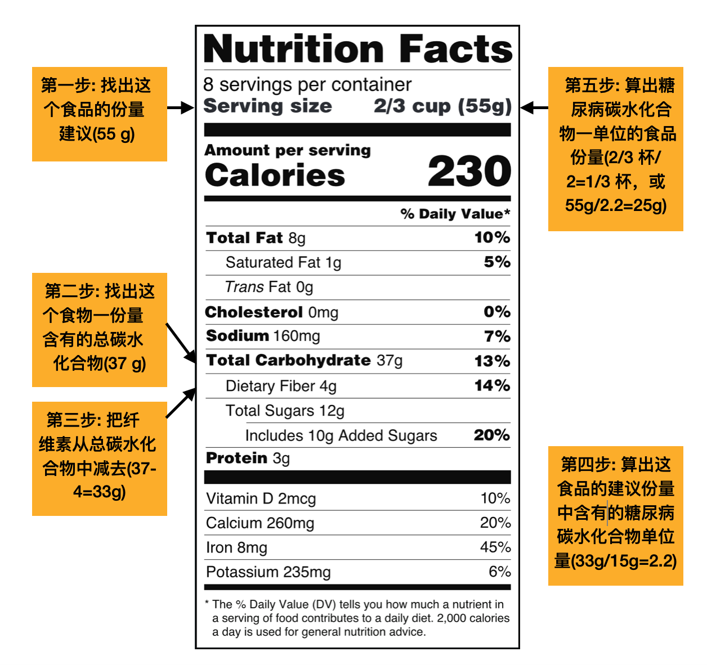
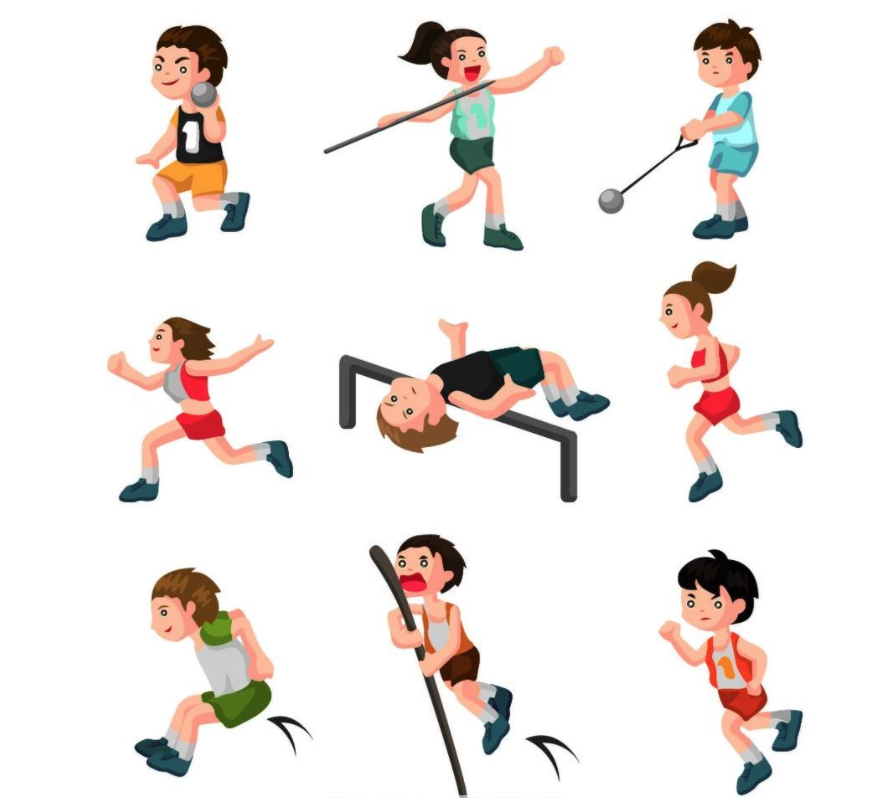
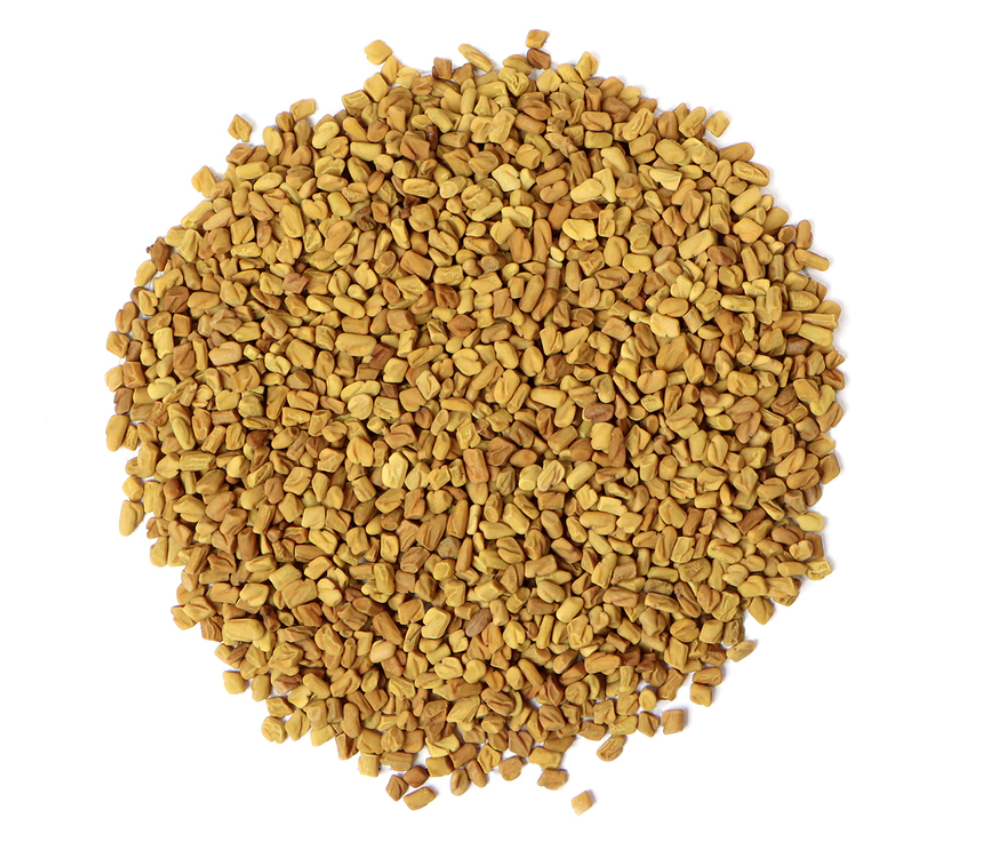
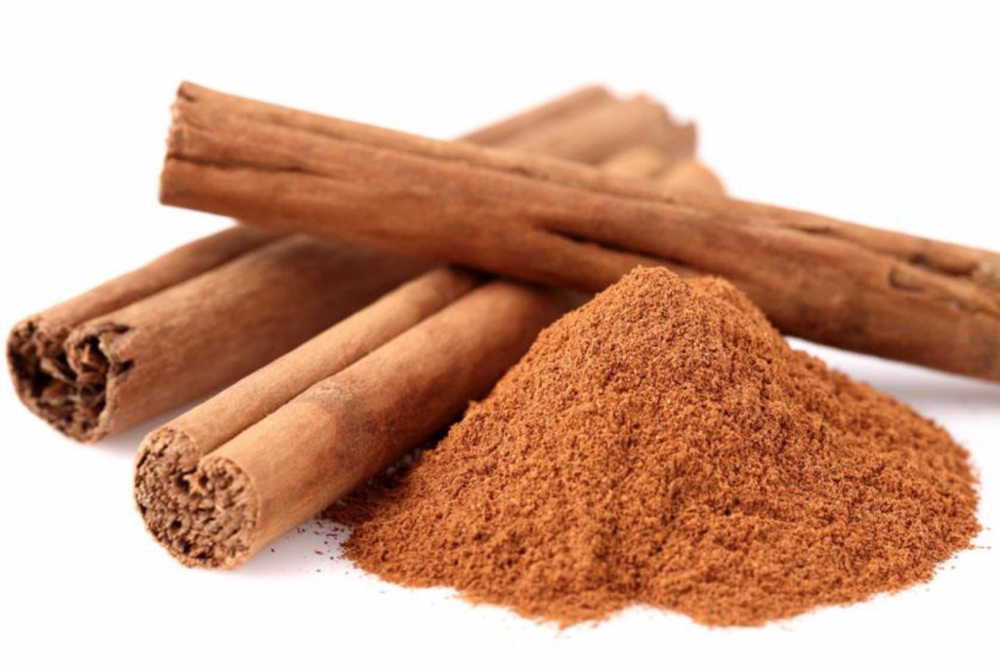
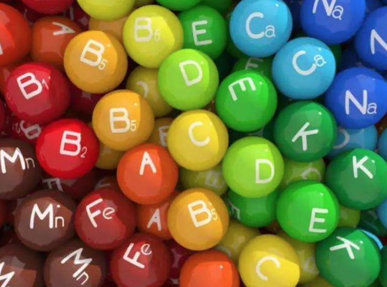
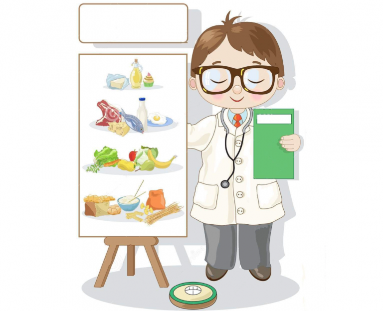

糖尿病的营养保健
糖尿病的营养保健
“哦，糖尿病患者的血糖比正常人高，但我不知道为什么高血糖会导致健康问题。”
如果这是你的回答，我并不会感到稀奇。根据CDC的报告资料，美国四分之一的糖尿病患者并不知道自己患有糖尿病，而超过1亿人患有糖尿病或前期糖尿病。糖尿病是美国2015年第七大造成死亡原因的疾病。
糖尿病的发生是由于人体内不能分泌胰岛素，分泌的胰岛素不够或是身体细胞对胰岛素不够敏感而造成对糖份的新陈代谢功能紊乱失调或是缺失。它的临床特征是多饮，多尿，多食，高血糖，以及尿液含葡萄糖等。
糖尿病引起的器官神经衰竭并发症

因糖尿病引发的慢性器官并发症包括视力下降，失明，心血管疾病，肾衰竭（肾透析），下肢截肢等。类似于HIV病毒感染造成的并发症而死亡，糖尿病患者并非因高血糖而死亡，而是由糖尿病引起其他器官严重衰竭的并发症而死亡。高浓度的血糖长期在体液中不断循环会逐渐损害动脉管，各器官的毛细血管和神经末梢，比如视神经受损而导致失明，脚趾或脚部神经坏死而截肢，动脉壁损伤引起动脉硬化再导致心脏病和中风，还有肾器官毛细血管损坏以及超负荷运作引起的肾衰竭。在美国大多数的肾透析患者大部分是因糖尿病患者没控制好血糖而导致肾功能衰竭。肾透析患者余生都要依附于肾透析而存活，每周透析三次，每次三到五小时不等，除非他们很幸运的能成功获得匹配的肾脏移植。其实糖尿病患者如果能持之以恒的控制好血糖，还是可以避免或延缓糖尿病并发症的发生，过上普通人的健康生活不是问题。
糖尿病有几种？
你经常听到人们说1型或2型糖尿病，但是你知道它们之间的区别吗？实际上，还有第三种叫妊娠期糖尿病。 一型糖尿病也称为青少年糖尿病，通常在儿童或青春期诊断出糖尿病。 一型糖尿病患者几乎不能分泌胰岛素或不能分泌足够的胰岛素。他们一生都必须依赖胰岛素注射。胰岛素是一种荷尔蒙，可以帮助人体细胞吸收血糖，它就像是一把能让血糖顺利进入人体细胞大门的钥匙。葡萄糖只有进入到细胞内才能完成新陈代谢和能量转化。 二型糖尿病患者仍然可以分泌胰岛素或比较少量胰岛素，但身体细胞对胰岛素的反应不够敏感，就像失灵的钥匙没能打开细胞大门。二型糖尿病通常在中老年人中确诊的比较多，也是最常见的一种糖尿病。妊娠期糖尿病仅在孕妇怀孕期间发病，在孕妇分娩后血糖水平又会恢复到正常范围。
患糖尿病的风险因素
增加患糖尿病的风险因素包括家族糖尿病史，种族，年龄，不良饮食，肥胖，缺乏运动等。虽然我们无法改变所有的风险因素，但是我们可以降低能改变的风险因素，比如改进饮食，减肥，和增加运动量等。在美国肥胖症是造成二型糖尿病的主要风险因素。 体重指数（BMI）≥ 25的人被认为是体重超重，而BMI值≥ 30的人被认为是肥胖。想知道你的体重指数是多少，点击这里可以帮你算出你的BMI值，再对照表格查看。理想的BMI值是在18.5-24.9之间。根据各自情况，结合营养均衡的饮食和适当的运动量可以帮助我们维持健康的体重。想要知道更多减肥知识请参考之前的文章，请点击这里。营养均衡的饮食和适当的运动习惯还可以带来其他健康益处，例如提升细胞对胰岛素的敏感性，增加人体免疫力，和改善心血管健康。
血糖浓度值是什么意思？

<70 mg / dL（<3.9 mmol / L）：血糖值偏低
70-99 mg / dL（3.9 – 5.5 mmol / L）：正常血糖水平范围
100-125 mg / dL （5.6 mmol / L-6.9 mmol / L）：血糖偏高，属于前期糖尿病血糖值范围
> 126 mg / dL（7.0 mmol / L）：很高，属于糖尿病血糖值范围
低生糖指数/生糖负荷的食物

血糖生成指数（GI）或是生糖指数是进食某种食物后对人体血糖影响程度得出来的一个数值。数值范围通常在0-100之间，以纯葡萄糖的血糖生成指数为100为参考数值。
中等GI食物： 56-69血糖生成指数范围
高GI食物：≥70血糖生成指数范围
低GI食物：≤55血糖生成指数范围
生糖负荷值是血糖生成指数和实际摄入碳水化合物量的乘积，本质上它是在血糖生成指数的基础上增加了对碳水化合物摄入量的考虑。高生糖负荷值食品的GL值定义为≥20。对于糖尿病患的食谱规划而言，生糖负荷值更实用，因为它考量了对某种碳水化合物食物摄入的份量。建议糖尿病患者多选择低生糖负荷和中等生糖负荷的食物。通常可溶性纤维素含量高的食物的血糖生成指数值较低。将高生糖指数的食物与高蛋白质和脂肪的食物一起食用也可以降低高生糖食物的GI值。
| 食物 |
血糖生成指数 |
食物 |
血糖生成指数 |
| 谷类食物类 |
|
蔬菜类 |
|
| 大麦 |
28±2 |
煮胡萝卜 |
39±4 |
| 玉米饼 |
46±2 |
蔬菜汤 |
48±5 |
| 全麦意大利面 |
48±5 |
煮芋头 |
53±2 |
| 意大利面 |
49±2 |
炸马铃薯 |
63±5 |
| 甜玉米 |
52±2 |
煮地瓜 |
63±6 |
| 米粉 |
53±7 |
煮南瓜 |
64±7 |
| 糙米饭 |
68±4 |
煮马铃薯 |
78±2 |
| 白米饭 |
73±4 |
速溶马铃薯糊 |
87±3 |
| 全麦面包 |
74±2 |
乳制品及替代品 |
|
| 面包 |
75±2 |
豆浆 |
34±4 |
| 早餐速成谷类食物 |
|
脱脂牛奶 |
37±4 |
| 传统燕麦粥 |
55±2 |
全脂牛奶 |
39±3 |
| 小米粥 |
67±5 |
水果味酸奶 |
41±2 |
| 速食燕麦粥 |
79±3 |
冰淇淋 |
51±3 |
| 玉米片 |
81±6 |
米制奶 |
86±7 |
| 水果类 |
|
豆类 |
|
| 苹果 |
36±2 |
大豆 |
16±1 |
| 苹果汁 |
41±2 |
芸豆 |
24±4 |
| 橙 |
43±3 |
鹰嘴豆 |
28±9 |
| 香蕉 |
43±3 |
扁豆 |
32±5 |
| 罐装桃子 |
43±5 |
零食 |
|
| 草莓果酱/果冻 |
49±3 |
巧克力 |
40±3 |
| 橙汁 |
50±2 |
马铃薯脆片 |
56±3 |
| 芒果 |
51±5 |
汽水饮料 |
59±3 |
| 菠萝 |
59±8 |
爆米花 |
65±5 |
| 西瓜 |
76±4 |
糯米饼/薄脆片 |
87±2 |
碳水化合物摄入计量法和糖尿病膳食规划

相对于微量营养素，碳水化合物是一种宏量营养素，它经人体消化后会生成血糖。通常含碳水化合物的食物包括谷物，淀粉类蔬菜（土豆，芋头），水果，乳制品等。每个人对热量和碳水化合物的需求是不同的。糖尿病患者要知道自己一天的碳水化合物的总量需求，并保持每天的碳水化合物摄入量是一样的。只有这样，你的血糖不会忽高忽低，出现过山车的大反差现象，保持血糖平稳是预防糖尿病并发症的重要手段。每15克的碳水化合物计量为一单位碳水化合物，这可能是⅓杯糙米饭或一片全麦面包。虽说要保持每天的碳水化合物摄入量一样，但是有时候由于特殊情况，比如运动量的改变，药物处方改变，或饮食习惯变化等，你可能同时需要调整碳水化合物的摄入量。在做膳食归划时，请多选择低生糖指数GI的食物，懂得高低生糖食物的相互搭配。如果你今天在午餐时吃了高GI的食物，如一碗白米饭，那么剩下食物选择必须是低GI的食物（如豆类，鸡肉或绿色蔬菜沙拉）。有关生糖食物高低搭配，请参考上表。每天的饮食搭配应包含至少六份水果和非淀粉类蔬菜，六到八份谷类，淀粉类蔬菜或豆类（至少3份是粗粮），至少2杯（8盎司/1杯）牛奶，奶制品或乳制品替代饮品。
| 1份碳水化合物〜15克碳水化合物 |
1份碳水化合物〜15克碳水化合物 |
| 淀粉类 |
水果类 |
| 1片面包（1盎司） |
1小个水果 |
| 1玉米饼（6英寸） |
½杯罐头类水果 |
| ¼百吉面包圈 |
½杯冷冻水果 |
| ½汉堡包 |
½杯瓜类或梅类水果 |
| ¾杯无糖添加的速食麦制品 |
6颗大葡萄（3盎司） |
| ½杯加热速食麦制品 |
12-15颗小葡萄 |
| 5片咸饼干 |
1杯无糖添加的果汁 |
| ⅓杯煮熟的意大利面或米饭 |
¼杯水果干 |
| ½杯煮熟的豆 |
牛奶 |
| ½杯土豆泥 |
1杯低脂或脱脂牛奶 |
| ¾盎司薯片，玉米饼 |
1杯豆奶 |
| 3杯爆米花 |
1杯杏仁奶 |
| 蔬菜 |
甜食 |
| 1½杯煮熟的非淀粉类蔬菜 |
2英寸蛋糕块 |
| 3杯绿叶沙拉 |
½杯冰淇淋 |
如何读取食品标签
懂得如何从食品标签中算出碳水化合物单位量是碳水化合物计量的必备技能。请参考下图中的步骤进行计算。

多运动的益处

糖尿病患者需要保持经常做有氧运动。有氧运动有助于提高人体细胞对胰岛素的敏感性。建议你每周运动至少3天，每次运动维持至少50分钟左右的中低强度有氧运动；或者每周5天，每次30分钟的中低强度运动。长期运动还有助于保持健康的体重远离肥胖，有益于减少其他的慢性疾病。
糖尿病的食品药草疗法
生姜

生姜

生姜
苦瓜
民间流传了很多治疗糖尿病的传统草药疗法。它们中很多是缺乏强有力的科学证据来证实这些草药疗法的有效性。研究人员推荐了一些比较有效的药食，例如苦瓜，肉桂，胡芦巴，生姜等。苦瓜含有四种抗糖尿病成分，包括charanti，vicine，凝集素和类似胰岛素多肽-p。这些活性元素都具有降血糖的作用。肉桂可以改善糖尿病患者的血糖和胆固醇水平，从而降低了与糖尿病相关的并发症的风险因素。在市场上有两种常见类型的肉桂，对糖尿病有益的唯一类型叫 锡兰肉桂 （Ceylon cinnamon在市场上较少见），而不是另一种叫决明子树皮的肉桂。如果你考虑服用肉桂胶囊，请购买正确的肉桂类型。胡芦巴种子含有很高的可溶性纤维素。我们前文提到过可溶性纤维含量高的食物通常生糖指数（GI）较低，所以对血糖生成的影响也比较小。胡芦巴还含有丰富的维生素，矿物质和抗氧化剂，这些营养素都可为你的健康带来诸多好处。姜根茎有助于人体肌肉细胞对葡萄糖的摄取利用。研究人员发现姜有助于提高二型糖尿病患者的胰岛素分泌，从而有助于人体细胞对血糖的吸收。生姜还有许多其他对人体健康的益处，例如增强免疫力和消化功能。在你决定尝试以上任何一种药食疗法之前，请先咨询你的医生是否会对你已经在服用的药物功效造成影响。
维生素和矿物质

营养均衡的饮食具有全面性的健康益处，因为它可以提供人体所需的各种维生素，矿物质，抗氧化剂，这些营养素有益于我们人体的生长，修复，抗衰老以及其他的功能机制。缺乏任何一种维生素，矿物质或抗氧化剂都可能会导致健康问题。这里列举一些有益于糖尿病患者的营养素，𝛼-硫锌酸（ALA），𝛾-亚麻酸（GLA），生物素，铬，纤维醇，锰，镁，维生素D。𝛼-硫锌酸（ALA）和𝛾-亚麻酸（GLA）是自然生成的抗氧化剂，有助于缓解糖尿病造成的神经损伤。生物素增加了葡萄糖激酶的活性，以此增加胰岛素的分泌。铬金属元素有助于提高糖尿病患者的抗糖性。它同时有助于降低血液中葡萄糖，胆固醇和胰岛素的浓度。纤维醇可以逆转糖尿病引起的神经损伤。研究人员发现锰和镁缺乏症与糖尿病有一定关联，它们与碳水化合物的新陈代谢有密切关系。糖尿病人的锰和镁的水平明显低于正常健康人的水平。维生素D可以增强人体细胞对胰岛素的敏感度从而细胞可以更好的吸收血糖。在试用任何以上这些营养保健品之前，请先咨询你的医生。
膳食纤维素
膳食纤维素有两种类型，可溶性纤维和不可溶性纤维。纤维素有助于消化道的健康。想要了解有关消化道健康的更多信息请点击这里。可溶性纤维素对于糖尿病血糖控制有一定的积极作用。可溶性纤维可溶于水，形成粘稠的凝胶状体可以延长餐后葡萄糖进入血液中的时间跨度。这也是为什么含高可溶性纤维素食物的生糖指数比较低的原因。美国营养协会建议女性每天的膳食纤维的摄入量（RDA）建议为25克/天，男性约为38克/天。大多数蔬菜，水果和豆类都富含纤维素。如果你的平时的纤维素摄入是不够的，你需要循循渐进的添加纤维素的摄入量。如果突然摄入大量纤维食物，可能会导致腹胀或肠痉挛。在增加纤维食物摄入的同时，也要增加足够的水分以防止身体缺水，因为可溶性纤维素在肠道中会吸收大量水分。
血糖检测
对于胰岛素依赖型糖尿病患者，每天早晨，餐前，餐后，睡觉之前，运动后等都要检测一下你的血糖是否在目标值范围内。有时候还因为日常安排，健康状况，饮食或服用药物等变化还要额外增加检测次数。经常检测你的血糖可以更好地了解不同因素对你的血糖的影响，因为相同的因素对不同的人所造成的血糖影响可能是不一样的。了解你的血糖对不同因素的反应，你可以为下次血糖控制做出更好的调整。遇到疑问时随时咨询医生。预防血糖过高或过低的另一个原因，是因为过高或过低的血糖有可能会导致糖尿病休克昏迷。如果糖尿病患者出现头痛，头晕，高烧，发颤，无力，焦虑，盗汗，饥饿感，意识混乱等症状，应立即检测血糖，如果血糖过高或过低而自己不能把控，都应尽快就医。通常血糖偏低时，根据需求服用糖片可以快速提升血糖。 如果家里没有备用糖片的，可用喝橙汁和苹果汁等饮料来升血糖。
咨询医生和营养师关于糖尿病的预防

如果你有糖尿病家族史，那你应每年按时完成常规健康体检。早期预防是防止得糖尿病的关键。很多确诊的糖尿病患者，在确诊之前他们的高血糖水平可能已经持续好多年了，但是他们没有把握住机会好好去控制高血糖导致最终确诊。如果你有糖尿病家族史，多向你的医生和营养师咨询有关糖尿病预防的相关知识。一旦糖尿病确诊，控制血糖就要成为一生的健康事业。我们平时都应该注意养成健康的生活习惯和饮食习惯，因为这些良好习惯是预防各种疾病的有效方法包括糖尿病和心血管疾病。如果已经是糖尿病患者了，也不要丧气，只要你很好地控制血糖也一样可以过上健康的生活。 良好的自控力是糖尿病患者需要不断提升的一种能力。
糖尿病患者的样本菜单
糖尿病膳食归划的终极目标是保持血糖曲线在一天中起伏平稳，不要像过山车似的高低起伏，所以少吃多餐可以拉平曲线。多选择生糖指数低的食品，请参考上表。如果你是胰岛素依赖型糖尿病患者，请一定每天多次检测血糖，按处方量注射胰岛素。请参考下面的糖尿病样本菜单来规划你的饮食，这份菜单是基于1500 卡 /天的热量。